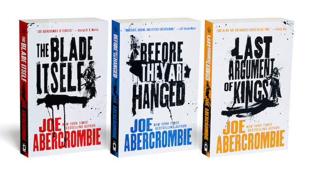
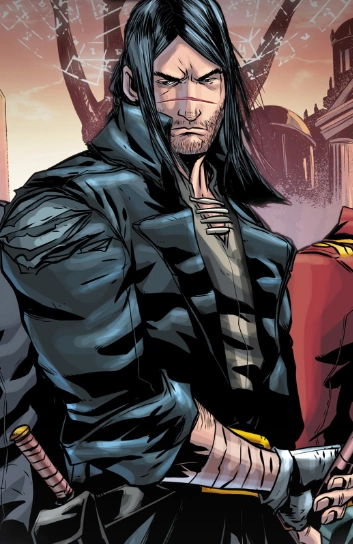
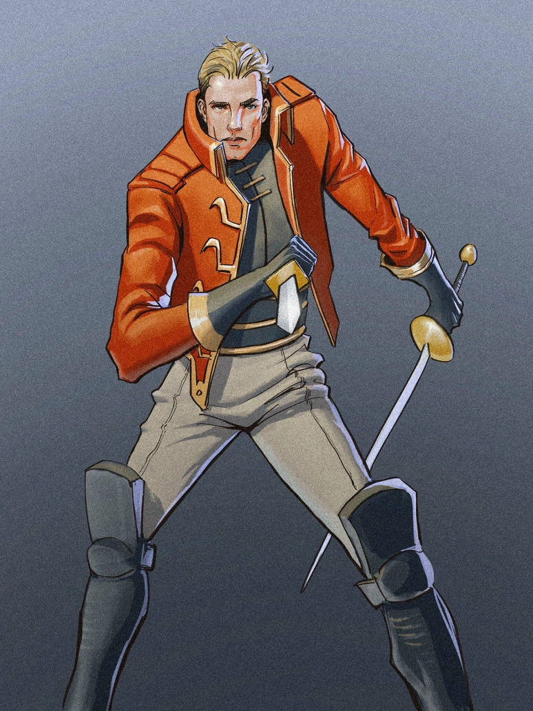
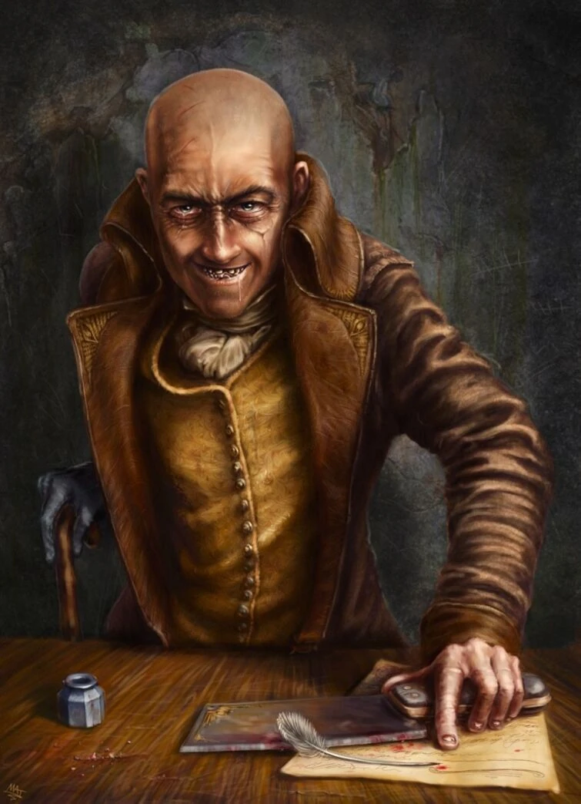
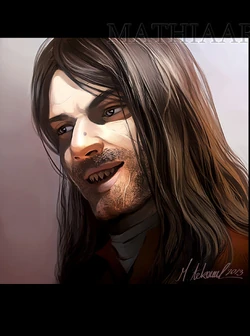
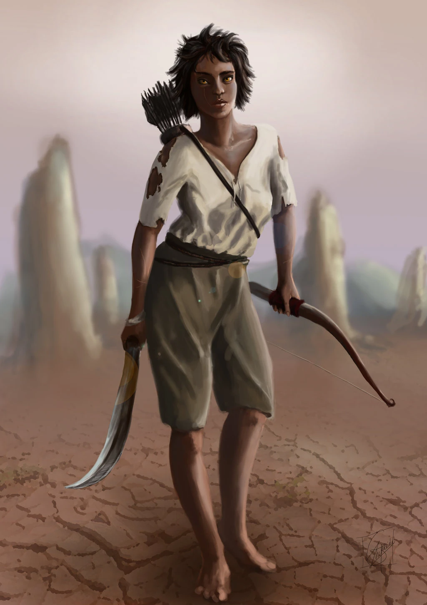
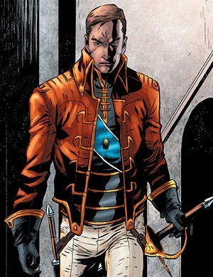

Written By Joe Abercrombie.
Written By Joe Abercrombie.
The First Law is a fantasy series written by British
author Joe Abercrombie. The First Law is the title of
the original trilogy in the series, but is also used to
refer to the series as a whole.The full series consists
of a trilogy, three stand-alone novels, short stories, and a
second trilogy, titled The Age of Madness, of which the third
book was published in September 2021.
The Books Of Trilogy


Logen "NineFingers"
Logen Ninefingers, also known as The Bloody-Nine,
is a Northman with a black name and even blacker past,
who strives to turn from the path of senseless violence
he has followed for so long. He is a major POV character
in the First Law Trilogy and later returns in Red Country
as a supporting character.

Jezal Dan Luthar
Jezal dan Luthar was a wealthy young Union nobleman
and Captain in the King's Own, and later High King
of the Union. Jezal is a major POV character in the
First Law trilogy. He also appears in Best Served Cold
and A Little Hatred.

Sand dan Glokta
Sand dan Glokta was a former champion swordsman
and dashing war-hero of the King's Own, before being
captured and tortured for years by the Gurkish.
As a shunned cripple, he turns from tortured to
torturer, becoming an Inquisitor in the King's Inquisition.
A major point of view character in The First Law trilogy,
and an important supporting character in The Age of Madness trilogy.

The Dogman
The Dogman is a Named Man famed for his scouting and marvelous
sense of smell. He is Logen Ninefingers' oldest friend, and
a member of his crew along with Rudd Threetrees, Black Dow,
Thunderhead, Harding Grim, and Forley the Weakest.The Dogman
is lean, with lank matted brown hair. He has quick dark clever
eyes, and sharp yellow pointed teeth.Dogman's a skilled archer,
and uses a sword at closer quarters. In addition to Northern,
he also speaks the Union tongue with a thick accent; despite
the fact that prior to the series, he had never left The North.

Ferro Maljinn
Ferro is a Devil-Blood, a distant descendant of the Demons,
and possesses several traits of their bloodline. Her physical
capabilities exceed normal human limits, including speed,
endurance, tolerance to pain, healing, ability to go without
sleep, and hearing. Her vision is especially acute; she can see
in near-total darkness and her distance perception is as good
as a man with a spyglass. However, she is completely color-blind.
Her demonic heritage also allows Ferro to safely handle The Seed,
and seemingly allowed her to sense its presence in the House of the Maker.

Collem West
Collem West is a common-born Major in the Union Army, and a secondary
Point-of-View character throughout the trilogy.West is a tall, gaunt,
worried-looking man with a sharp, lined face and thinning hair.
Collem West is intelligent and dilligent with a good heart; he tries to
do what he can for those less fortunate than himself, like Goodman Heath.
However, he also has a terrible temper, which he finds hard to control.
This is exacerbated by the chronic headaches he periodically suffers from.
Example how to add location in HTML from google map